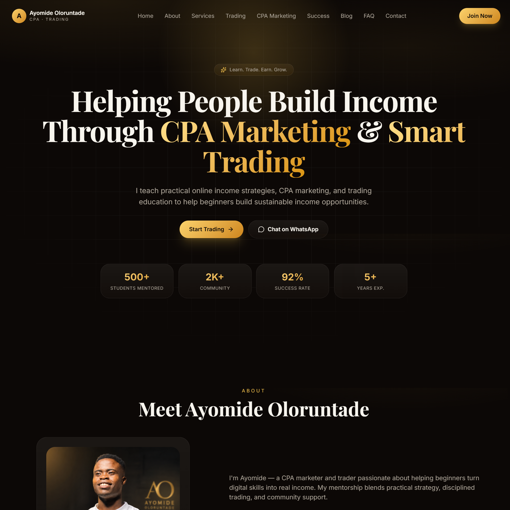

Trade With Ayo — Trading & CPA Marketing Platform
A modern personal-brand website designed for Ayomide Oloruntade, a trading and CPA marketing educator. The platform provides visitors with information about trading education, CPA marketing, affiliate marketing, mentorship, and risk management.
The website is structured to introduce the brand, showcase its services and educational resources, build trust with potential clients/students, and provide direct channels for inquiries and mentorship.